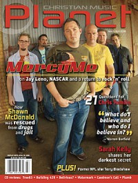

CMnexus
:
Contemporary Christian culture, music, and media.
Magazines
Profiles
Dove Awards
cmnexus.org
CM
nexus
→
Profiles
→
U
→
Dave Urbanski
Dave Urbanski
< -- Prev
ious
Next-- >
25
26
27
28
29
30
31
32
33
34
Writing credits listing
Mar 2006
in
YouthWorker
22.4
Hillsong
-
God He Reigns
Vicky Beeching
-
Yesterday, Today and Forever
Katelyn Tarver
-
Wonderful Crazy
Shane & Shane
-
An Evening With Shane and Shane
Mark Schultz
-
Live: A Night of Stories & Songs
David Phelps
-
Life Is a Church
Cindy Morgan
-
Postcards
Ana Laura
-
Ana Laura
Jennifer Knapp
-
Live
Jaime Jamgochian
-
Reason To Live
Mark Harris
-
The Line Between the Two
FFH
-
Voice from Home
Anthony Evans
-
Letting Go
Jeremy Camp
-
Live Unplugged
Caedmon's Call
-
In the Company of Angels II: The World Will Sing
Warren Barfield
-
Reach
Mainstay
-
Well Meaning Fiction
Delirious?
-
The Mission Bell
Life In Your Way
-
Ignite and Rebuild
various artists -
Second Chance Soundtrack
The Listening
-
The Listening EP

Mar 2006
in
Christian Music Planet
5.2
"MercyMo: Nothin' but blue skies ahead"
MercyMe
Sanctus Real
-
The Face of Love
Tree63
-
Worship Volume One: I Stand For You
Mar 2007
in
Christian Music Planet
6.2
various artists -
Glory Revealed: The Word of God In Worship
"P.E.A.C.E. MAKER"
Rick Warren
"Will The Real John Reuben Please Stand Up?"
John Reuben
Mar 2007
in
New Man
14.2
"Redeemed Rebel"
Wess Morgan
Jul 2007
in
New Man
14.4
"Full Throttle Worship"
Tim Hughes
Oct 2011
in
Christianity Today
55.10
Kerosene Halo
-
Kerosene Halo
Dec 2011
in
Christianity Today
55.12
Billy Batstone
,
Bob Bennett
,
Alex MacDougall
-
Jesus Music Again
May 2012
in
Christianity Today
56.5
Bonnie Raitt
-
Slipstream
Jul 2012
in
Christianity Today
56.7
The Choir
-
The Loudest Sound Ever Heard
< -- Prev
ious
Next-- >
25
26
27
28
29
30
31
32
33
34
CMnexus
(noun)
The magazine index
of modern music
and Christianity
© 2011 CMnexus. Last updated May 2025.
Contact:
Rants and other correspondence to:
editor -AT- cmnexus
-DØT- org
About